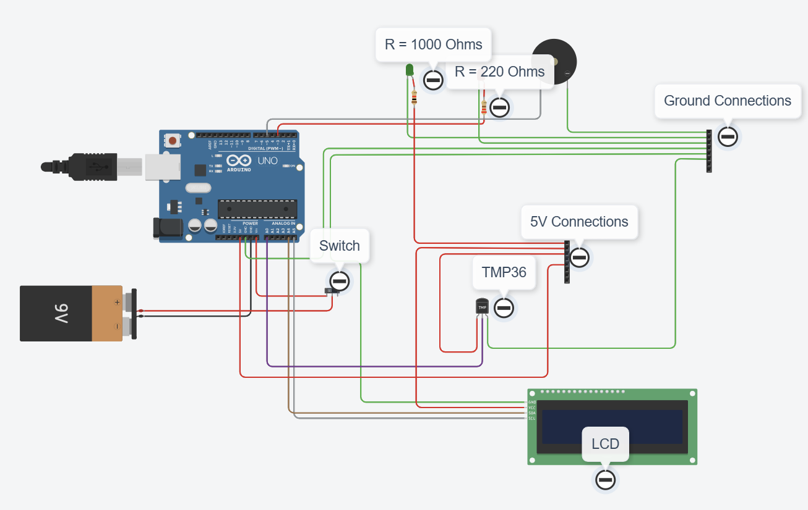
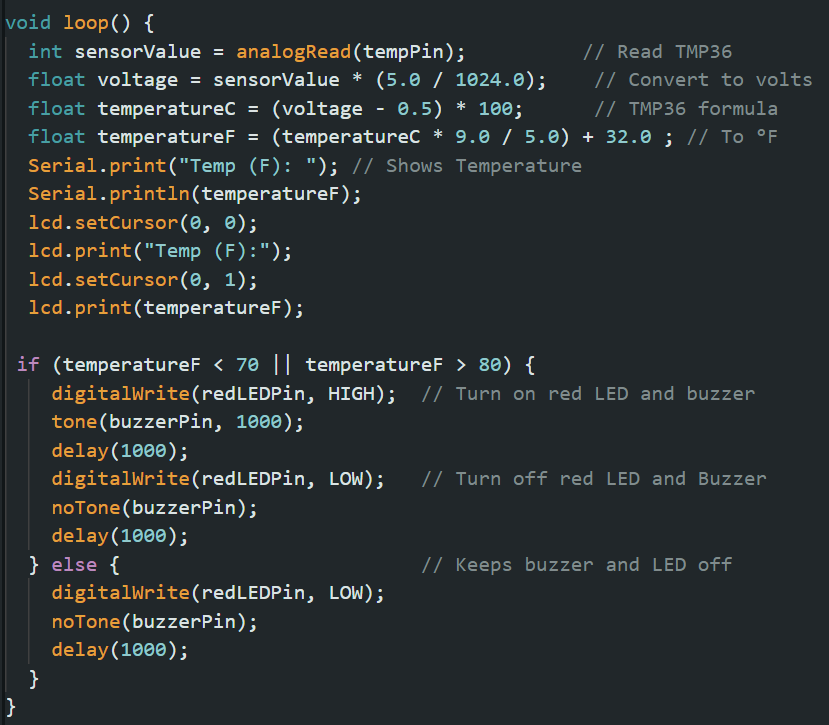
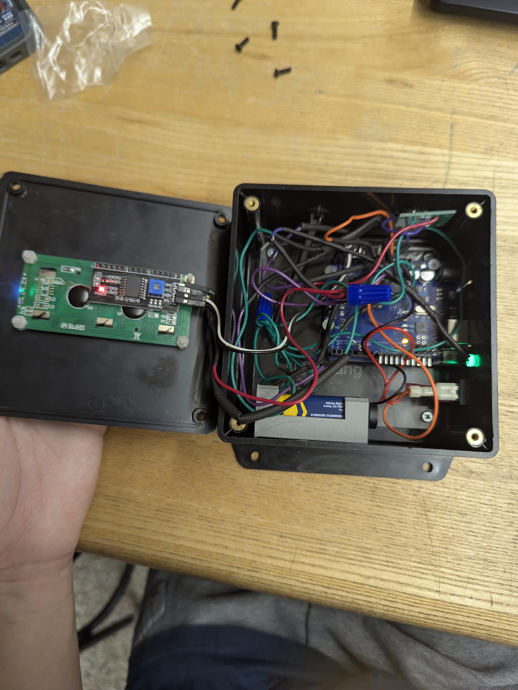

Design & Fabrication
Arduino Temperature Sensor Monitor

Project overview
Sketched, modeled in CAD, and built a temperature monitor.
I designed and built a room temperature monitor that shows the live temperature and flashes a light and sounds a buzzer when the room leaves its comfortable range.
An Arduino Uno reads a TMP36 sensor and shows the temperature on a 16×2 I2C LCD. A green LED shows the monitor is on; when the reading leaves the set range, a red LED flashes and a piezo buzzer sounds. Everything is housed in an ABS enclosure I modeled in CAD. The full process is documented in the EK131 Final Report.
Key work & outcomes
- Built a working prototype in an ABS enclosure around an Arduino Uno, TMP36 sensor, and I2C LCD.
- Designed a two-level alert: a dim green power LED and a bright flashing red LED with a piezo buzzer.
- Calculated about 35.6 hours of runtime from a 9 V, 500 mAh battery drawing 14.06 mA.
- Identified improvements: easier battery access, a more compact layout, and sturdier materials.
Design
Modeling the enclosure
Every component was measured and sketched before the box, lid, and battery holder were modeled.


Electronics
Wiring and code
Resistor choices set the brightness of each LED, so the warning light stands out.
The green LED runs through a 1 kΩ resistor (about 5.2 mA) and the red LED through 220 Ω (about 13.9 mA), so the warning is noticeably brighter than the power light. The LCD uses jumper wires for its SDA and SCL signals; everything else uses 22 AWG wire for a lower voltage drop and a secure connection. The code converts the sensor voltage to degrees and triggers the alert when the reading leaves the 70–80 °F window.


Build
The finished monitor
The components fit inside the box, although the battery was hard to reach among the wiring.


Continue exploring